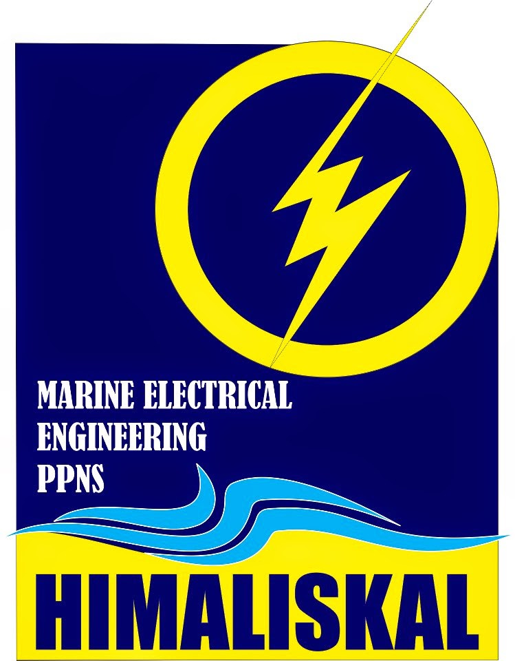

Riwayat Organisasi
Keterlibatan manajerial dan pengembangan soft-skills akademis.

Staff Magang KWU HIMALISKAL
Politeknik Perkapalan Negeri Surabaya (PPNS)
Berperan aktif dalam birokrasi kemahasiswaan, pengelolaan acara diskusi akademik, dan penyusunan seminar nasional yang berfokus pada perkembangan teknologi kelistrikan maritim modern.
Staff Ahli KWU HIMALISKAL
Divisi Acara & Logistik
Berpengalaman dalam manajemen proyek berskala kampus, mengkoordinir kelancaran teknis acara, dan memastikan seluruh kebutuhan electrical setup saat acara berjalan aman dan tanpa hambatan.
Sekertaris KWU HIMALISKAL
Divisi Acara & Logistik
Berpengalaman dalam manajemen proyek berskala kampus, mengkoordinir kelancaran teknis acara, dan memastikan seluruh kebutuhan electrical setup saat acara berjalan aman dan tanpa hambatan.